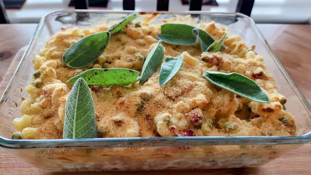

Cheat's macaroni cheese with ham, peas and stilton
25 mins
Serves 4
Italian

Step-by-step method for making Cheat's macaroni cheese with ham, peas and Stilton yourself.
Ingredients
275g dried macaroni
700g ready-made fresh three cheese sauce
grating of whole nutmeg, nutmeg
110g cooked ham, chopped
75g frozen petits pois
40g crumbled Stilton or grated cheddar
50g chunky white or ready-made breadcrumbs
large knob of butter
8
fresh sage leaves
Instructions
Preheat the oven to 200°C/Gas 7. Bring a pan of salted water to the boil. Cook the macaroni for 8-10 minutes or until just tender.
Meanwhile heat the cheese sauce in a largeish pan and stir in the nutmeg. Drain the pasta, mix with the hot cheese sauce, the ham, peas, Stilton or cheddar, and some seasoning. Pile into an ovenproof dish.
Scatter with the breadcrumbs and bake for 15 minutes or until bubbling and golden. At the same time, melt the butter until sizzling in a frying pan and cook the sage until crispy. Scatter the sage over the breadcrumbs before serving. Serve with a crisp salad or some steamed green beans. Any leftovers can be popped in the freezer for another day.